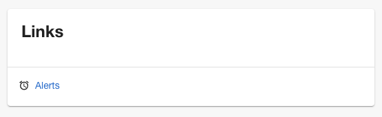

Backstage ships with a default theme with a light and dark mode variant. The
themes are provided as a part of the
@backstage/theme package,
which also includes utilities for customizing the default theme, or creating
completely new themes.
Creating a Custom Theme
The easiest way to create a new theme is to use the createTheme function
exported by the
@backstage/theme package. You
can use it to override some basic parameters of the default theme such as the
color palette and font.
For example, you can create a new theme based on the default light theme like this:
import { createTheme, lightTheme } from '@backstage/theme';
const myTheme = createTheme({
palette: lightTheme.palette,
fontFamily: 'Comic Sans MS',
defaultPageTheme: 'home',
});
If you want more control over the theme, and for example customize font sizes
and margins, you can use the lower-level createThemeOverrides function
exported by @backstage/theme
in combination with
createTheme
from @material-ui/core. See
the "Overriding Backstage and Material UI css rules" section below.
You can also create a theme from scratch that matches the BackstageTheme type
exported by @backstage/theme.
See the
Material-UI docs on theming
for more information about how that can be done.
Using your Custom Theme
To add a custom theme to your Backstage app, you pass it as configuration to
createApp.
For example, adding the theme that we created in the previous section can be done like this:
import { createApp } from '@backstage/app-defaults';
import { ThemeProvider } from '@material-ui/core/styles';
import CssBaseline from '@material-ui/core/CssBaseline';
import LightIcon from '@material-ui/icons/WbSunny';
const app = createApp({
apis: ...,
plugins: ...,
themes: [{
id: 'my-theme',
title: 'My Custom Theme',
variant: 'light',
icon: <LightIcon />,
Provider: ({ children }) => (
<ThemeProvider theme={myTheme}>
<CssBaseline>{children}</CssBaseline>
</ThemeProvider>
),
}]
})
Note that your list of custom themes overrides the default themes. If you still
want to use the default themes, they are exported as lightTheme and
darkTheme from
@backstage/theme.
Example of a custom theme
import {
createTheme,
genPageTheme,
lightTheme,
shapes,
} from '@backstage/theme';
const myTheme = createTheme({
palette: {
...lightTheme.palette,
primary: {
main: '#343b58',
},
secondary: {
main: '#565a6e',
},
error: {
main: '#8c4351',
},
warning: {
main: '#8f5e15',
},
info: {
main: '#34548a',
},
success: {
main: '#485e30',
},
background: {
default: '#d5d6db',
paper: '#d5d6db',
},
banner: {
info: '#34548a',
error: '#8c4351',
text: '#343b58',
link: '#565a6e',
},
errorBackground: '#8c4351',
warningBackground: '#8f5e15',
infoBackground: '#343b58',
navigation: {
background: '#343b58',
indicator: '#8f5e15',
color: '#d5d6db',
selectedColor: '#ffffff',
},
},
defaultPageTheme: 'home',
fontFamily: 'Comic Sans MS',
/* below drives the header colors */
pageTheme: {
home: genPageTheme({ colors: ['#8c4351', '#343b58'], shape: shapes.wave }),
documentation: genPageTheme({
colors: ['#8c4351', '#343b58'],
shape: shapes.wave2,
}),
tool: genPageTheme({ colors: ['#8c4351', '#343b58'], shape: shapes.round }),
service: genPageTheme({
colors: ['#8c4351', '#343b58'],
shape: shapes.wave,
}),
website: genPageTheme({
colors: ['#8c4351', '#343b58'],
shape: shapes.wave,
}),
library: genPageTheme({
colors: ['#8c4351', '#343b58'],
shape: shapes.wave,
}),
other: genPageTheme({ colors: ['#8c4351', '#343b58'], shape: shapes.wave }),
app: genPageTheme({ colors: ['#8c4351', '#343b58'], shape: shapes.wave }),
apis: genPageTheme({ colors: ['#8c4351', '#343b58'], shape: shapes.wave }),
},
});
For a more complete example of a custom theme including Backstage and Material-UI component overrides, see the Aperture theme from the Backstage demo site.
Overriding Backstage and Material UI components styles
When creating a custom theme you would be applying different values to component's css rules that use the theme object. For example, a Backstage component's styles might look like this:
const useStyles = makeStyles<BackstageTheme>(
theme => ({
header: {
padding: theme.spacing(3),
boxShadow: '0 0 8px 3px rgba(20, 20, 20, 0.3)',
backgroundImage: theme.page.backgroundImage,
},
}),
{ name: 'BackstageHeader' },
);
Notice how the padding is getting its value from theme.spacing, that means
that setting a value for spacing in your custom theme would affect this
component padding property and the same goes for backgroundImage which uses
theme.page.backgroundImage. However, the boxShadow property doesn't
reference any value from the theme, that means that creating a custom theme
wouldn't be enough to alter the box-shadow property or to add css rules that
aren't already defined like a margin. For these cases you should also create an
override.
import { createApp } from '@backstage/core-app-api';
import { BackstageTheme, lightTheme } from '@backstage/theme';
/**
* The `@backstage/core-components` package exposes this type that
* contains all Backstage and `material-ui` components that can be
* overridden along with the classes key those components use.
*/
import { BackstageOverrides } from '@backstage/core-components';
export const createCustomThemeOverrides = (
theme: BackstageTheme,
): BackstageOverrides => {
return {
BackstageHeader: {
header: {
width: 'auto',
margin: '20px',
boxShadow: 'none',
borderBottom: `4px solid ${theme.palette.primary.main}`,
},
},
};
};
const customTheme: BackstageTheme = {
...lightTheme,
overrides: {
// These are the overrides that Backstage applies to `material-ui` components
...lightTheme.overrides,
// These are your custom overrides, either to `material-ui` or Backstage components.
...createCustomThemeOverrides(lightTheme),
},
};
const app = createApp({
apis: ...,
plugins: ...,
themes: [{
id: 'my-theme',
title: 'My Custom Theme',
variant: 'light',
Provider: ({ children }) => (
<ThemeProvider theme={customTheme}>
<CssBaseline>{children}</CssBaseline>
</ThemeProvider>
),
}]
});
Custom Logo
In addition to a custom theme, you can also customize the logo displayed at the far top left of the site.
In your frontend app, locate src/components/Root/ folder. You'll find two
components:
LogoFull.tsx- A larger logo used when the Sidebar navigation is opened.LogoIcon.tsx- A smaller logo used when the sidebar navigation is closed.
To replace the images, you can simply replace the relevant code in those components with raw SVG definitions.
You can also use another web image format such as PNG by importing it. To do
this, place your new image into a new subdirectory such as
src/components/Root/logo/my-company-logo.png, and then add this code:
import MyCustomLogoFull from './logo/my-company-logo.png';
const LogoFull = () => {
return <img src={MyCustomLogoFull} />;
};
Icons
So far you've seen how to create your own theme and add your own logo, in the following sections you'll be shown how to override the existing icons and how to add more icons
Custom Icons
You can also customize the Project's default icons.
You can change the following icons.
Requirements
- Files in
.svgformat - React components created for the icons
Create React Component
In your front-end application, locate the src folder. We suggest creating the assets/icons directory and CustomIcons.tsx file.
Another example here, if you want to ensure proper behavior in light and dark themes.
```tsx title="customIcons.tsx" import { SvgIcon, SvgIconProps } from '@material-ui/core';
import React from 'react';
export const ExampleIcon = (props: SvgIconProps) => (
#### Using the custom icon
Supply your custom icon in `packages/app/src/App.tsx`
```tsx title="packages/app/src/App.tsx"
/* highlight-add-next-line */
import { ExampleIcon } from './assets/customIcons'
const app = createApp({
apis,
components: {
{/* ... */}
},
themes: [
{/* ... */}
],
/* highlight-add-start */
icons: {
github: ExampleIcon,
},
/* highlight-add-end */
bindRoutes({ bind }) {
{/* ... */}
}
})
Adding Icons
You can add more icons, if the default icons do not fit your needs, so that they can be used in other places like for Links in your entities. For this example we'll be using icons fromMaterial UI and specifically the AlarmIcon. Here's how to do that:
- First you will want to open your
App.tsxin/packages/app/src - Then you want to import your icon, add this to the rest of your imports:
import AlarmIcon from '@material-ui/icons/Alarm'; - Next you want to add the icon like this to your
createApp:
tsx title="packages/app/src/App.tsx"
const app = createApp({
apis: ...,
plugins: ...,
/* highlight-add-start */
icons: {
alert: AlarmIcon,
},
/* highlight-add-end */
themes: ...,
components: ...,
});
- Now we can reference
alertfor our icon in our entity links like this:
yaml
apiVersion: backstage.io/v1alpha1
kind: Component
metadata:
name: artist-lookup
description: Artist Lookup
links:
- url: https://example.com/alert
title: Alerts
icon: alert
And this is the result:

Another way you can use these icons is from the AppContext like this:
```ts import { useApp } from '@backstage/core-plugin-api';
const app = useApp(); const alertIcon = app.getSystemIcon('alert'); ```
You might want to use this method if you have an icon you want to use in several locations.
Note: If the icon is not available as one of the default icons or one you've added then it will fall back to Material UI's LanguageIcon
Custom Sidebar
As you've seen there are many ways that you can customize your Backstage app. The following section will show you how you can customize the sidebar.
Sidebar Sub-menu
For this example we'll show you how you can expand the sidebar with a sub-menu:
- Open the
Root.tsxfile located inpackages/app/src/components/Rootas this is where the sidebar code lives - Then we want to add the following import for
useApp:
tsx title="packages/app/src/components/Root/Root.tsx"
import { useApp } from '@backstage/core-plugin-api';
- Then update the
@backstage/core-componentsimport like this:
tsx
import {
Sidebar,
sidebarConfig,
SidebarDivider,
SidebarGroup,
SidebarItem,
SidebarPage,
SidebarScrollWrapper,
SidebarSpace,
useSidebarOpenState,
Link,
/* highlight-add-start */
GroupIcon,
SidebarSubmenu,
SidebarSubmenuItem,
/* highlight-add-end */
} from '@backstage/core-components';
- Finally replace
<SidebarItem icon={HomeIcon} to="catalog" text="Home" />with this:
tsx
<SidebarItem icon={HomeIcon} to="catalog" text="Home">
<SidebarSubmenu title="Catalog">
<SidebarSubmenuItem
title="Domains"
to="catalog?filters[kind]=domain"
icon={useApp().getSystemIcon('kind:domain')}
/>
<SidebarSubmenuItem
title="Systems"
to="catalog?filters[kind]=system"
icon={useApp().getSystemIcon('kind:system')}
/>
<SidebarSubmenuItem
title="Components"
to="catalog?filters[kind]=component"
icon={useApp().getSystemIcon('kind:component')}
/>
<SidebarSubmenuItem
title="APIs"
to="catalog?filters[kind]=api"
icon={useApp().getSystemIcon('kind:api')}
/>
<SidebarDivider />
<SidebarSubmenuItem
title="Resources"
to="catalog?filters[kind]=resource"
icon={useApp().getSystemIcon('kind:resource')}
/>
<SidebarDivider />
<SidebarSubmenuItem
title="Groups"
to="catalog?filters[kind]=group"
icon={useApp().getSystemIcon('kind:group')}
/>
<SidebarSubmenuItem
title="Users"
to="catalog?filters[kind]=user"
icon={useApp().getSystemIcon('kind:user')}
/>
</SidebarSubmenu>
</SidebarItem>
When you startup your Backstage app and hover over the Home option on the sidebar you'll now see a nice sub-menu appear with links to the various Kinds in your Catalog. It would look like this:

You can see more ways to use this in the Storybook Sidebar examples
Custom Homepage
In addition to a custom theme, a custom logo, you can also customize the homepage of your app. Read the full guide on the next page.